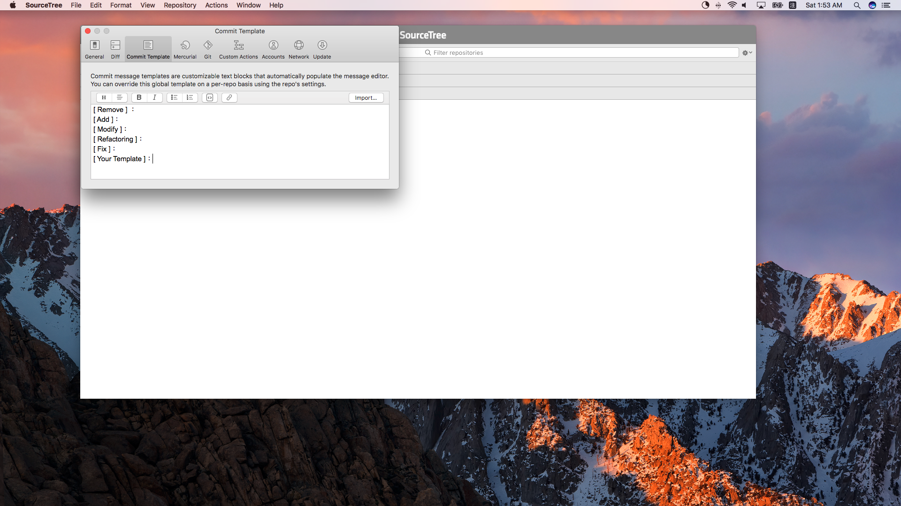
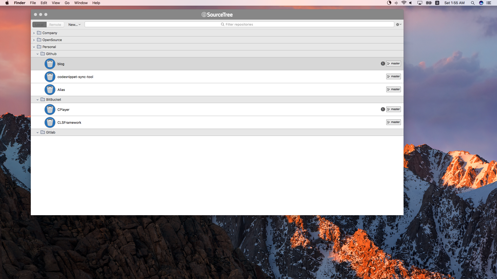

記錄平常在使用 git 一些不錯指令。
(一) Git Clone
最近公司配了一台新電腦，當要重新 clone 一個專案的時候發現 clone 了超久，於是就找找了兩種小方法來縮短 clone 的時間 xd 。
- 只允許 clone 特定數量的 commits
|
|
- 單純 clone 特定的 branch
|
|
(二) Git LFS
假如要透過 git 來管理較大檔案(超過 2G)的時候 ex: 比如圖片或者影片…等。這時候我推薦使用 Git Large File Storage，原理就是在目錄底下存了一個 pointer file，指向真正存儲這些檔案的地方，當在 clone 這些檔案的時候 git 會自動 mapping 檔案的所在目的地。
安裝
|
|
指定哪些檔案你要(track)跟蹤的
|
|
並會生成 .gitattributes，記得要 git add 上
Down，接著就可以 push 。
(三) Git Log
再多人開發的時候，通常會通過拆功能來共同開發，但有一些檔案難免會互相動到，比如 Marco.swift 或者 AppDelegate …等。在我這邊的情境是我想知道在 AppDelegate 哪時候是誰寫了這段 Code，這時候就可以以下指令找出哪幾個 commits 有更改過 AppDelegate.swift。
|
|
有網友提供了其他解決方案
|
|
這兩種唯一不同的地方是當假如 AppDelegate.swift 原本不叫 AppDelegate.swift，而是 AppProtocol.swift 的話那單純只使用 git log [Path] 就會沒辦法追蹤。
(四) SourceTree 統一 commit
在 SourceTree 的偏好設定裡面有一個選項是 Commit Template，在之後每個專案裡面在準備輸入 Commit 紀錄都會出現初始化好的 Commit Template。治療強迫症，是一個不錯的方法來管理整個 Team 的 Commit 規則。

(五) SourceTree repositories 介面也可以透過資料夾區分

(六) 欺騙 Git
在開發 Egret 的時候有些設定檔案(下面叫它 A File)在每次 build 的時候都會變動，造成多人開發的時候非常困難，那怎麼辦呢。
我想到兩種做法
第一次 push 的時候把 A File push 上去，然後第二次 push 的時候把 A File 加入 .gitignore 裡面，這樣共同開發者 pull 下來的時候有 A File ，然後之後在開發的時候又不會造成 conflict。
使用 assuming
|
|
直接上 code 拉，就是假裝這個檔案已經 unchanged，所以之後如何變動都不用造成共同開發的 conflict。感覺層次就上升了一層 xxd。
最后更新： 2017年11月26日 11:58